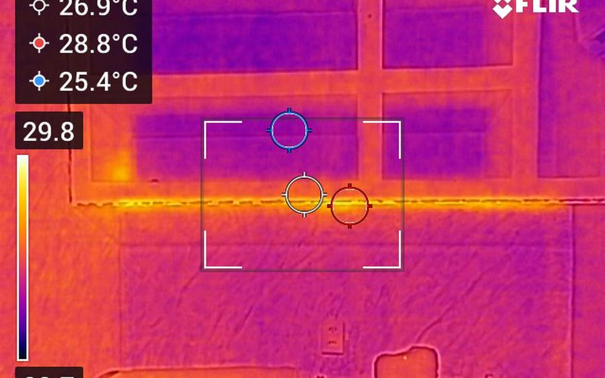
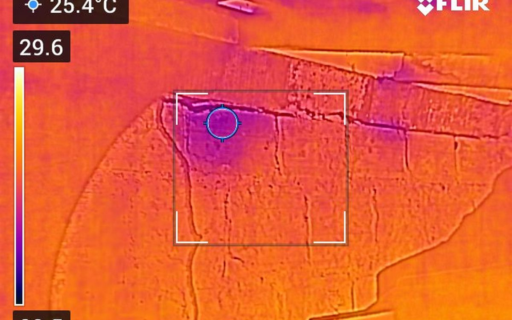

Casos recentes
Ensaios conduzidos pela VIP.


Investigamos patologias com instrumentação calibrada — sem abrir paredes, sem comprometer a estrutura. Um conjunto de métodos complementares que sustenta tecnicamente cada conclusão do laudo.
Patologia em edificação raramente está só onde a gente vê. Uma fissura que aparece na parede pode ter origem em outro elemento estrutural; uma mancha de umidade pode vir de uma tubulação a metros de distância. Ensaios não destrutivos permitem entender a causa real antes de qualquer intervenção.
A VIP Engenharia opera um conjunto de equipamentos calibrados que cobrem os principais cenários de investigação predial: avaliação de concreto, infiltrações ocultas, tubulações embutidas e estado superficial dos elementos.
Você pode contratar um ensaio pontual (por exemplo, esclerometria em uma laje específica) ou um pacote integrado dentro de uma inspeção predial.
Tipos de ensaio
Cada ensaio tem aplicação ideal. Combinamos a técnica certa com a pergunta que você precisa responder — todas com instrumentação calibrada e operada pelo engenheiro responsável.
Estima a resistência superficial do concreto in loco. Verificação de qualidade construtiva e confirmação de fck em estruturas existentes (NBR 7.584).
Câmera FLIR para localizar infiltrações, vazamentos hidráulicos ocultos, falhas de isolamento e pontes térmicas — sem demolir.
Detecta posição, diâmetro e cobrimento de armaduras e tubulações dentro de elementos de concreto sem comprometê-los.
Aspersão de fenolftaleína 1% para medir o avanço da frente de carbonatação no concreto, indicador da vida útil residual da estrutura.
Higrômetro Klein Tools ET140 para mapear teor de umidade em elementos construtivos, prevenindo desenvolvimento de mofo e descolamentos.
Identifica pisos ocos, descolamentos cerâmicos e falhas ocultas em revestimentos. Ideal para investigação de pavimentações e fachadas.
Régua fissurômetro Trident e monitor 2D Fenix para acompanhar evolução temporal de fissuras e diferenciar ativas de estabilizadas.
Medição de desaprumos e desnivelamentos em paredes, lajes e pilares. Importante para detecção precoce de recalques de fundação.
Sonômetro Instrutherm para medição de níveis sonoros em ambientes — útil para laudos de conforto acústico e disputas de vizinhança.
Câmera endoscópica LAFOCH para investigar cavidades, dutos e locais inacessíveis sem necessidade de demolição.
Lanterna UV combinada com corante traçador Yamalux para localizar pontos exatos de vazamento em sistemas hidráulicos pressurizados.
Caneta detectora Minipa e soquete Habotest para verificação de tensão e identificação de circuitos energizados durante inspeção.
Casos recentes

